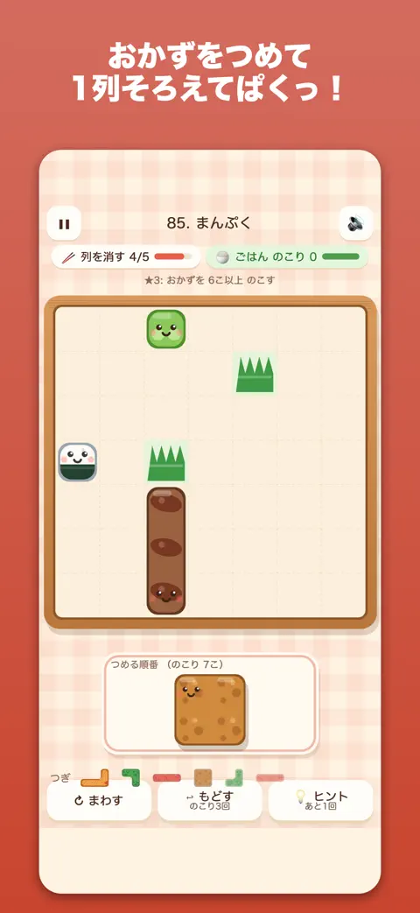
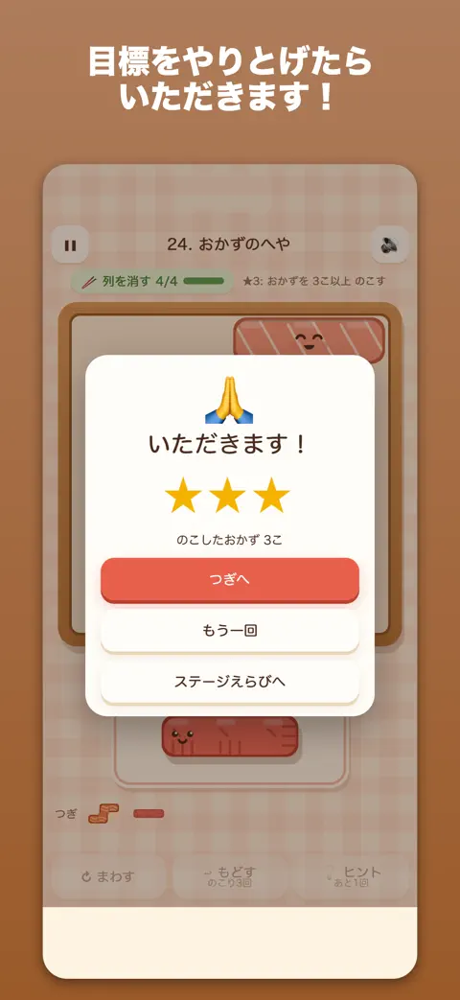
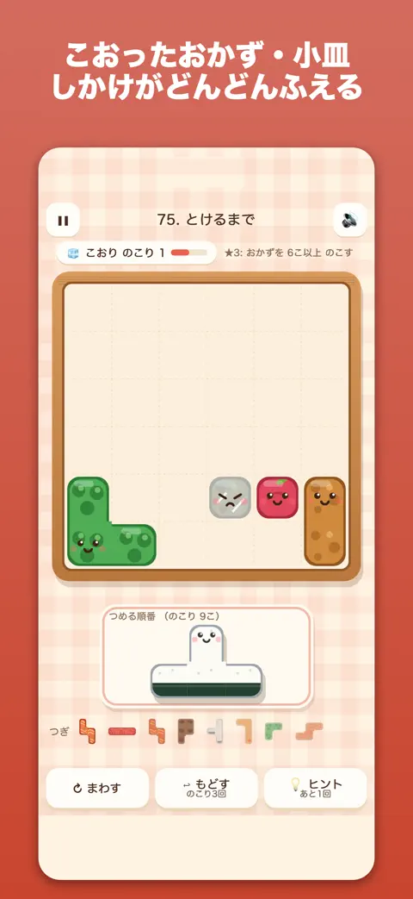

お弁当のブロックパズル（iPhone）
おかず詰めパズル
今日のおべんとう、
いちばん上手につめるのはだれ？
決まった順番で出てくるおかずを、お弁当箱につめるパズル。たてかよこが1列そろうと「ぱくっ！」。毎日かわる「今日のおべんとう」は、みんな同じ問題で勝負です。
App Store で無料ダウンロード無料・広告あり／iPhone（iOS 18 以降）
▶ プレイのようす（音なし）
おかず詰めパズルとは？
おかず詰めパズルは、決まった順番で出てくるおかずをお弁当箱につめて、たてかよこを1列そろえるブロックパズル。毎日の「今日のおべんとう」はみんな同じ問題で、ランキングでくらべられます。全200ステージ・20章。無料（広告あり）のiPhoneアプリ。
- 料金無料・広告あり
- 対応iPhone（iOS 18 以降）
- ジャンルパズル・脳トレ
- 今日の問題毎日0時（日本時間）にかわる





「今日のおべんとう」で勝負
- みんな同じ問題きまった順に出てくるおかずを、すきまなく ぜんぶつめる1問。だれでも同じです。
- 順位のきまり方のこったおかずが少ない人、やりなおしが少ない人、タイムが短い人の順にならびます。
- 名前を決めるだけサインインはいりません。ニックネームを決めるだけで参加でき、記録はいつでも消せます。
ランキングに入るのはその日の1回目だけ。2回目からは練習で何回でも遊べます。「ふりかえり」で、つめた順に1手ずつ見なおせます。
こんな人におすすめ
- ブロックをすきまなく並べるのが好きな人
- かわいい食べ物のイラストが好きな人
- 先を読んで考えるパズルが好きな人
遊び方は3ステップ
- はこぶお皿の上のおかずを、指でお弁当箱へ。タップすると90度まわります。
- 先を読む「つぎ」に、このあとのおかずの順番がぜんぶ見えます。
- ぱくっ！たてかよこが1列そろうと食べて消えます。目標をやりとげたら「いただきます！」。
ルールとしかけ
列をそろえて ぱくっ！
おかずをお弁当箱につめて、たてか よこが1列そろうと「ぱくっ！」と食べて消える。目標をぜんぶできたら「いただきます！」。
ゆびで はこぶ・タップで まわす
お皿のおかずを、ゆびでお弁当箱へ。タップすると くるっと回る。おかずは決まった順番で出てきて、「つぎ」で先まで見える。
ごはん
さいしょから入っている白いマス。ごはんのある列をそろえると、ごはんも食べられる。
バランのしきり
みどりのバランには おかずを置けないけど、列にはかぞえる。バランは消えない。
回せないおかず・小皿
のおかずは回せない。おかずを1つ、小皿にとっておいて、あとでつめられる。
こおったおかず
こおったからあげは、1回目に列が消えると とけるだけ。2回目で食べられる。
特徴
- 200ステージ・20章10ステージごとに新しいしかけ
- 11種類のおかずからあげ・タコさんウインナー・たまご焼きなど
- 7×7の大きなお弁当目標が2つや3つのステージも
- 毎日今日のおべんとうすきまなく、ぜんぶつめる1問
さいきんのアップデート
バージョン 1.0.13（2026年11月23日）
- BGMをつけました（タイトルの「BGM」でオン・オフできます）
- 画面の上に時計と電池を出すようにしました
- 今日の問題の結果から「ステージで遊ぶ」「タイトルへ」にすぐ進めるようにしました
- おかずを小皿に置きやすくしました
くわしい遊び方
決まった順番で出てくるおかずを、指でお弁当箱へはこびます。たてかよこが1列そろうと、おかずを「ぱくっ！」と食べて消えます。目標（列を消す・ごはんを食べる など）をやりとげたらクリアです。
- まわす：おかずをタップすると90度まわります（鍵のついたおかずは回せません）
- ステージ：全200ステージ・20章。ごはん・バラン・小皿・こおったおかずなどのしかけが出てきます。★はクリアのタイムで決まります（ヒント1回で +30秒。もどしても★はへりません）
- 今日のおべんとう：毎日かわる大きなお弁当です（だれでも同じ問題）。のこったおかずが少ない → やりなおしが少ない → タイムが短い 順でランキングに参加できます（ランキングに入るのは、その日の1回目の記録だけ）
- もどす・ヒント：「もどす」は1ステージ3回、「ヒント」は1ステージ1回まで無料です。そのあとは動画広告を見ると使えます（見るかどうかは選べます）
よくある質問
お弁当のパズルゲームは？
おかず詰めパズルは、決まった順番で出てくるおかずをお弁当箱につめて、たてかよこを1列そろえるブロックパズルです。無料（広告あり）の iPhone アプリです。
毎日勝負できるブロックパズルは？
おかず詰めパズルの「今日のおべんとう」は、毎日かわる1問をみんなで解きます。のこりが少ない順・やりなおしが少ない順・タイムが短い順にランキングされます。
無料ですか？
はい、無料でダウンロードして遊べます（広告あり）。App Store のページからどうぞ。
どの端末で使えますか？
iPhone（iOS 18 以降）で使えます。Android 版はありません。
おかずが入らなくなった
「あらら…」の画面から、1つもどしてやりなおせます。「つぎ」に、このあとのおかずの順番がぜんぶ出ているので、先を読んでつめてみてください。
途中でやめたい
左上の一時停止ボタンから、つづける・やりなおす・もどる を選べます。
音を消したい
画面右上のスピーカーのボタンで、音のオン・オフを切り替えられます。
次のステージが選べない
ステージはクリアすると次が開きます。
記録を消したい・引き継ぎたい
記録はこの iPhone の中に保存しています（ランキングに名前をのせた場合は、ニックネームと記録だけを送ります。ランキングの画面の「ランキングから自分の記録を消す」でいつでも消せます）。アプリを削除すると記録も消えます。ほかの端末への引き継ぎにはまだ対応していません。
お問い合わせ
不具合やご要望は、メールでお知らせください。お使いの iPhone の機種と iOS のバージョンを書いていただけると助かります。